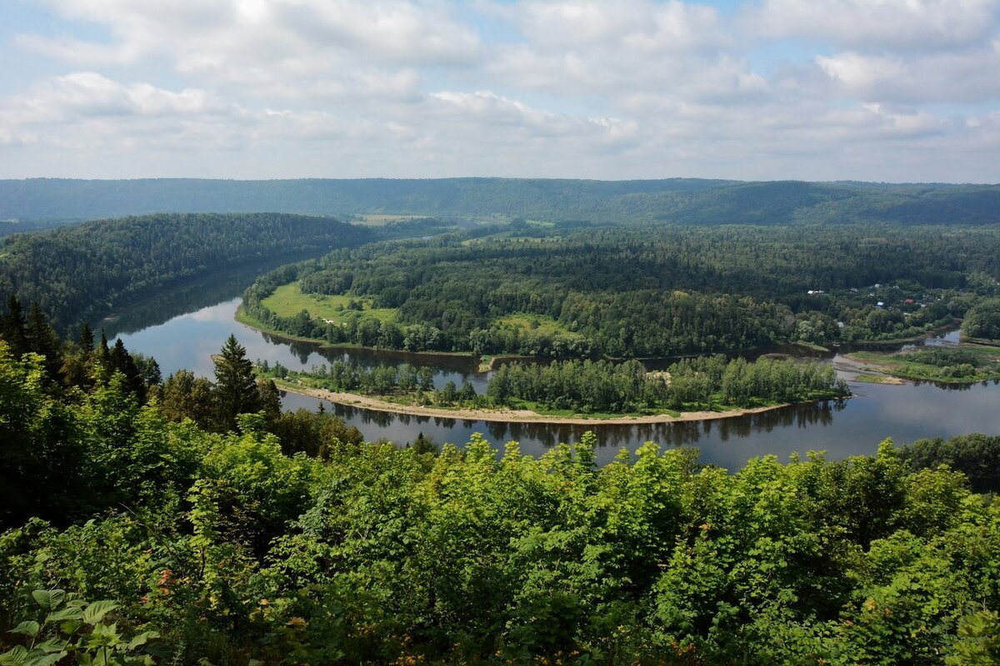
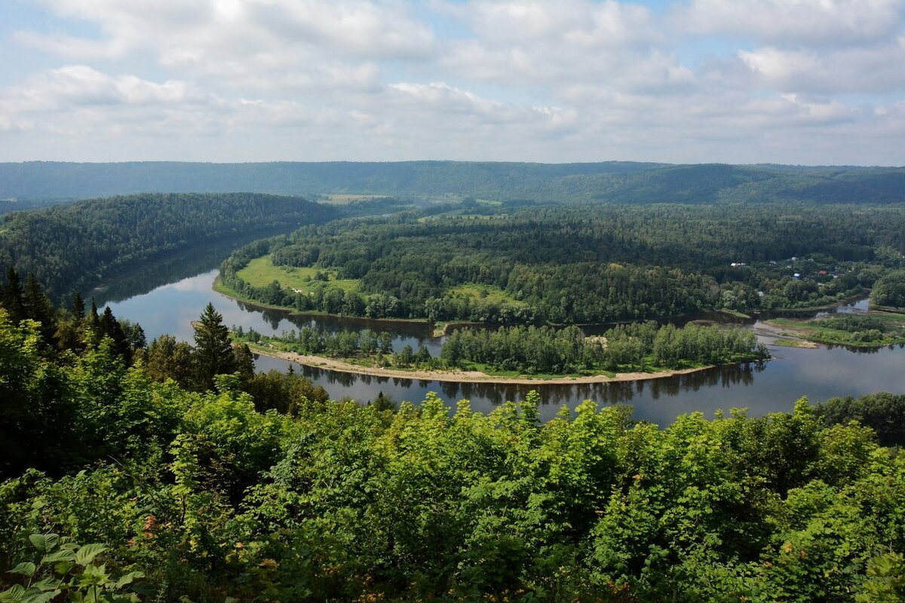

Водопа́д — падение воды в реке с уступа, пересекающего речное русло. В отличие от речных порогов, для водопадов характерны резкий перепад высоты речного дна и отвесность падения. Поскольку падение воды разрушает уступ, мощные водопады непрестанно перемещаются вверх по реке. Например, Ниагарский водопад ежегодно смещается на 70-90 см.